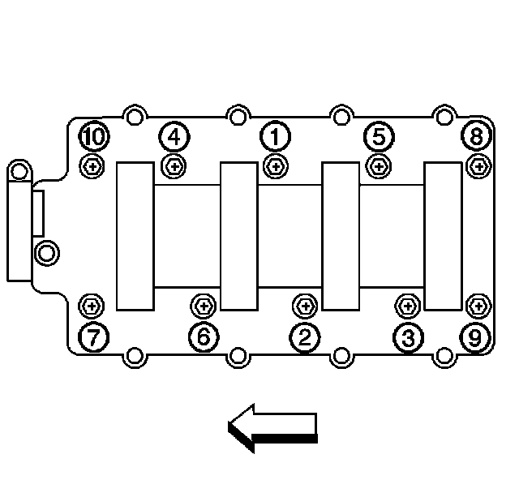

Fastener Tightening Specifications
Intake Manifold RPO (LC9)(LMG)(LY5)(L76)(LY2)(LY6)(L92)
Install NEW intake manifold gaskets (514) to the intake manifold.
Remove the covers from the cylinder head passages.

Install the intake manifold (500).
Tighten the intake manifold bolts (512) until snug.

Tighten the intake manifold bolts to specifications.
Tighten the bolts
First pass in the sequence shown to 5 N.m (44 lb in).
Final pass in the sequence shown to 10 N.m (89 lb in).
Intake Manifold Sight Shield Retainer Bolts 5 N.m (44 lb in)
Throttle Body Bolts 10 N.m (89 lb in)
Throttle Body Nuts 10 N.m (89 lb in)
Throttle Body Studs 6 N.m (53 lb in)